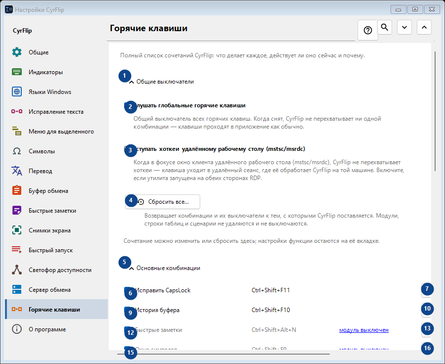
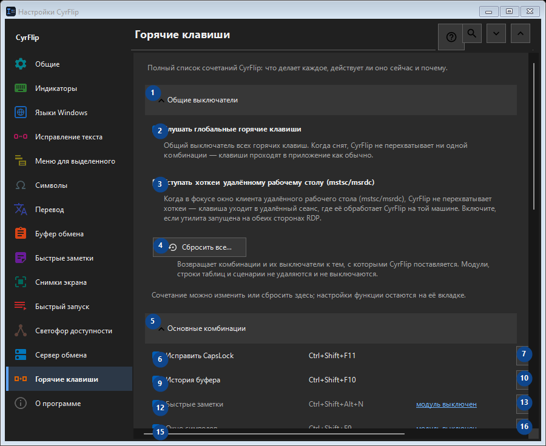

Горячие клавиши
Для чего это окно
Полный список сочетаний CyrFlip: что делает каждое, действует ли оно сейчас и почему.


Порядок действий
Настройки применяются сразу. Обязательного порядка нет; используйте группы ниже.
Элементы
1. Общие выключатели
Используйте команду, когда нужно указанное действие. Прочитайте запрос подтверждения перед согласием.
Ваши сочетания клавиш2. Слушать глобальные горячие клавиши
Общий выключатель всех горячих клавиш. Когда снят, CyrFlip не перехватывает ни одной комбинации — клавиши проходят в приложение как обычно.
Ваши сочетания клавиш3. Уступать хоткеи удалённому рабочему столу (mstsc/msrdc)
Когда в фокусе окно клиента удалённого рабочего стола (mstsc/msrdc), CyrFlip не перехватывает хоткеи — клавиша уходит в удалённый сеанс, где её обработает CyrFlip на той машине. Включите, если утилита запущена на обеих сторонах RDP.
Ваши сочетания клавиш4. Сбросить все...
Возвращает комбинации и их выключатели к тем, с которыми CyrFlip поставляется. Модули, строки таблиц и сценарии не удаляются и не выключаются.
Ваши сочетания клавиш5. Основные комбинации
Используйте команду, когда нужно указанное действие. Прочитайте запрос подтверждения перед согласием.
Ваши сочетания клавиш6. Исправить CapsLock Ctrl+Shift+F11
Используйте команду, когда нужно указанное действие. Прочитайте запрос подтверждения перед согласием.
Ваши сочетания клавиш7. Изменить... - Исправить CapsLock Ctrl+Shift+F11
Используйте команду, когда нужно указанное действие. Прочитайте запрос подтверждения перед согласием.
Ваши сочетания клавиш8. По умолчанию - Исправить CapsLock Ctrl+Shift+F11
Используйте команду, когда нужно указанное действие. Прочитайте запрос подтверждения перед согласием. Элемент сейчас недоступен. Сначала включите функцию или выберите запись.
Ваши сочетания клавиш9. История буфера Ctrl+Shift+F10
Используйте команду, когда нужно указанное действие. Прочитайте запрос подтверждения перед согласием.
Ваши сочетания клавиш10. Изменить... - История буфера Ctrl+Shift+F10
Используйте команду, когда нужно указанное действие. Прочитайте запрос подтверждения перед согласием.
Ваши сочетания клавиш11. По умолчанию - История буфера Ctrl+Shift+F10
Используйте команду, когда нужно указанное действие. Прочитайте запрос подтверждения перед согласием. Элемент сейчас недоступен. Сначала включите функцию или выберите запись.
Ваши сочетания клавиш12. Быстрые заметки Ctrl+Shift+Alt+N
Используйте команду, когда нужно указанное действие. Прочитайте запрос подтверждения перед согласием.
Ваши сочетания клавиш13. Изменить... - Быстрые заметки Ctrl+Shift+Alt+N
Используйте команду, когда нужно указанное действие. Прочитайте запрос подтверждения перед согласием.
Ваши сочетания клавиш14. По умолчанию - Быстрые заметки Ctrl+Shift+Alt+N
Используйте команду, когда нужно указанное действие. Прочитайте запрос подтверждения перед согласием. Элемент сейчас недоступен. Сначала включите функцию или выберите запись.
Ваши сочетания клавиш15. Окно символов Ctrl+Shift+F9
Используйте команду, когда нужно указанное действие. Прочитайте запрос подтверждения перед согласием.
Ваши сочетания клавиш16. Изменить... - Окно символов Ctrl+Shift+F9
Используйте команду, когда нужно указанное действие. Прочитайте запрос подтверждения перед согласием.
Ваши сочетания клавиш17. По умолчанию - Окно символов Ctrl+Shift+F9
Используйте команду, когда нужно указанное действие. Прочитайте запрос подтверждения перед согласием. Элемент сейчас недоступен. Сначала включите функцию или выберите запись.
Ваши сочетания клавиш18. Светофор доступности Ctrl+Shift+Alt+T
Используйте команду, когда нужно указанное действие. Прочитайте запрос подтверждения перед согласием.
Ваши сочетания клавиш19. Изменить... - Светофор доступности Ctrl+Shift+Alt+T
Используйте команду, когда нужно указанное действие. Прочитайте запрос подтверждения перед согласием.
Ваши сочетания клавиш20. По умолчанию - Светофор доступности Ctrl+Shift+Alt+T
Используйте команду, когда нужно указанное действие. Прочитайте запрос подтверждения перед согласием. Элемент сейчас недоступен. Сначала включите функцию или выберите запись.
Ваши сочетания клавиш21. Снимок области экрана Ctrl+F12
Используйте команду, когда нужно указанное действие. Прочитайте запрос подтверждения перед согласием.
Ваши сочетания клавиш22. Изменить... - Снимок области экрана Ctrl+F12
Используйте команду, когда нужно указанное действие. Прочитайте запрос подтверждения перед согласием.
Ваши сочетания клавиш23. По умолчанию - Снимок области экрана Ctrl+F12
Используйте команду, когда нужно указанное действие. Прочитайте запрос подтверждения перед согласием. Элемент сейчас недоступен. Сначала включите функцию или выберите запись.
Ваши сочетания клавиш24. Снимок всего экрана Ctrl+F11
Используйте команду, когда нужно указанное действие. Прочитайте запрос подтверждения перед согласием.
Ваши сочетания клавиш25. Изменить... - Снимок всего экрана Ctrl+F11
Используйте команду, когда нужно указанное действие. Прочитайте запрос подтверждения перед согласием.
Ваши сочетания клавиш26. По умолчанию - Снимок всего экрана Ctrl+F11
Используйте команду, когда нужно указанное действие. Прочитайте запрос подтверждения перед согласием. Элемент сейчас недоступен. Сначала включите функцию или выберите запись.
Ваши сочетания клавиш27. Снимок области с рисованием Ctrl+Alt+F12
Используйте команду, когда нужно указанное действие. Прочитайте запрос подтверждения перед согласием.
Ваши сочетания клавиш28. Изменить... - Снимок области с рисованием Ctrl+Alt+F12
Используйте команду, когда нужно указанное действие. Прочитайте запрос подтверждения перед согласием.
Ваши сочетания клавиш29. По умолчанию - Снимок области с рисованием Ctrl+Alt+F12
Используйте команду, когда нужно указанное действие. Прочитайте запрос подтверждения перед согласием. Элемент сейчас недоступен. Сначала включите функцию или выберите запись.
Ваши сочетания клавиш30. Снимок всего экрана с рисованием Ctrl+Alt+F11
Используйте команду, когда нужно указанное действие. Прочитайте запрос подтверждения перед согласием.
Ваши сочетания клавиш31. Изменить... - Снимок всего экрана с рисованием Ctrl+Alt+F11
Используйте команду, когда нужно указанное действие. Прочитайте запрос подтверждения перед согласием.
Ваши сочетания клавиш32. По умолчанию - Снимок всего экрана с рисованием Ctrl+Alt+F11
Используйте команду, когда нужно указанное действие. Прочитайте запрос подтверждения перед согласием. Элемент сейчас недоступен. Сначала включите функцию или выберите запись.
Ваши сочетания клавиш33. Открыть папку со снимками Ctrl+F10
Используйте команду, когда нужно указанное действие. Прочитайте запрос подтверждения перед согласием.
Ваши сочетания клавиш34. Изменить... - Открыть папку со снимками Ctrl+F10
Используйте команду, когда нужно указанное действие. Прочитайте запрос подтверждения перед согласием.
Ваши сочетания клавиш35. По умолчанию - Открыть папку со снимками Ctrl+F10
Используйте команду, когда нужно указанное действие. Прочитайте запрос подтверждения перед согласием. Элемент сейчас недоступен. Сначала включите функцию или выберите запись.
Ваши сочетания клавиш36. Открыть меню с клавиатуры Ctrl+Shift+Alt+M
Используйте команду, когда нужно указанное действие. Прочитайте запрос подтверждения перед согласием.
Ваши сочетания клавиш37. Изменить... - Открыть меню с клавиатуры Ctrl+Shift+Alt+M
Используйте команду, когда нужно указанное действие. Прочитайте запрос подтверждения перед согласием.
Ваши сочетания клавиш38. По умолчанию - Открыть меню с клавиатуры Ctrl+Shift+Alt+M
Используйте команду, когда нужно указанное действие. Прочитайте запрос подтверждения перед согласием. Элемент сейчас недоступен. Сначала включите функцию или выберите запись.
Ваши сочетания клавиш39. Отправить буфер на сервер
Используйте команду, когда нужно указанное действие. Прочитайте запрос подтверждения перед согласием.
Ваши сочетания клавиш40. Изменить... - Отправить буфер на сервер
Используйте команду, когда нужно указанное действие. Прочитайте запрос подтверждения перед согласием.
Ваши сочетания клавиш41. По умолчанию - Отправить буфер на сервер
Используйте команду, когда нужно указанное действие. Прочитайте запрос подтверждения перед согласием. Элемент сейчас недоступен. Сначала включите функцию или выберите запись.
Ваши сочетания клавиш42. Получить буфер с сервера
Используйте команду, когда нужно указанное действие. Прочитайте запрос подтверждения перед согласием.
Ваши сочетания клавиш43. Изменить... - Получить буфер с сервера
Используйте команду, когда нужно указанное действие. Прочитайте запрос подтверждения перед согласием.
Ваши сочетания клавиш44. По умолчанию - Получить буфер с сервера
Используйте команду, когда нужно указанное действие. Прочитайте запрос подтверждения перед согласием. Элемент сейчас недоступен. Сначала включите функцию или выберите запись.
Ваши сочетания клавиш45. Мышь
Используйте команду, когда нужно указанное действие. Прочитайте запрос подтверждения перед согласием.
Ваши сочетания клавиш46. Изменить... - Меню над выделением Ctrl + правая кнопка мыши
Используйте команду, когда нужно указанное действие. Прочитайте запрос подтверждения перед согласием.
Ваши сочетания клавиш47. По умолчанию - Меню над выделением Ctrl + правая кнопка мыши
Используйте команду, когда нужно указанное действие. Прочитайте запрос подтверждения перед согласием. Элемент сейчас недоступен. Сначала включите функцию или выберите запись.
Ваши сочетания клавиш48. Конвертация раскладок
Используйте команду, когда нужно указанное действие. Прочитайте запрос подтверждения перед согласием.
Ваши сочетания клавиш49. Перевод
Используйте команду, когда нужно указанное действие. Прочитайте запрос подтверждения перед согласием.
Ваши сочетания клавиш50. Быстрый запуск
Используйте команду, когда нужно указанное действие. Прочитайте запрос подтверждения перед согласием.
Ваши сочетания клавиш51. Windows
Используйте команду, когда нужно указанное действие. Прочитайте запрос подтверждения перед согласием.
Ваши сочетания клавиш